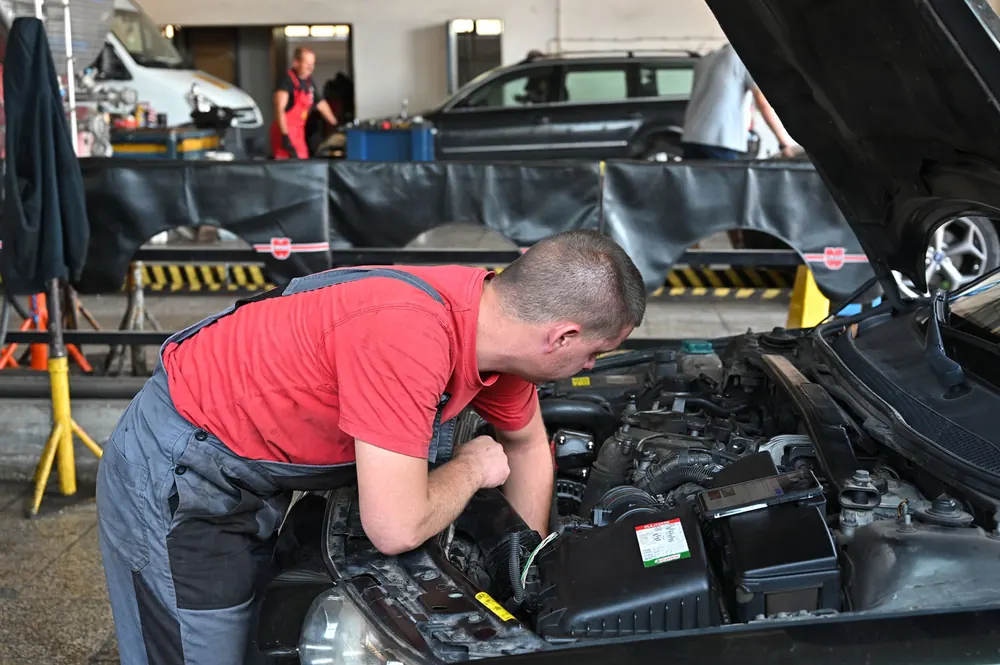
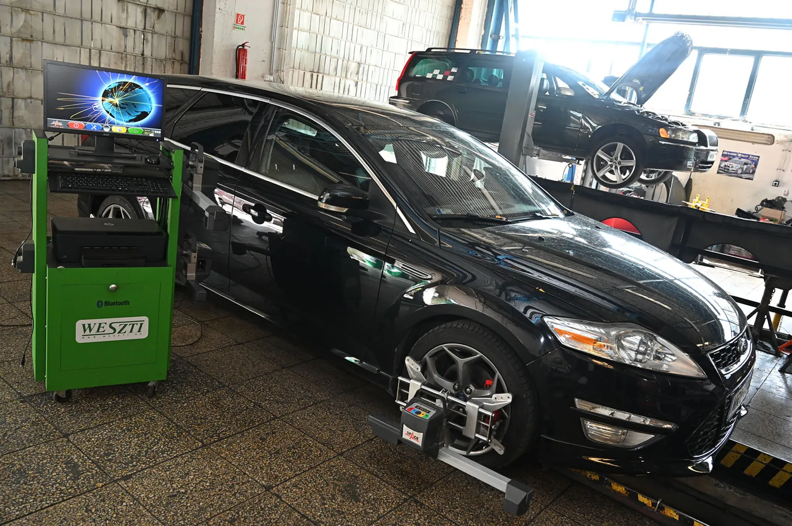
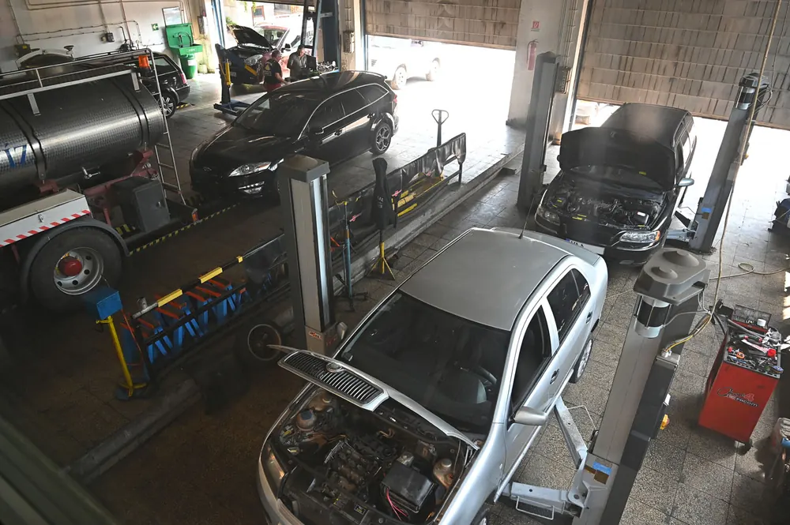
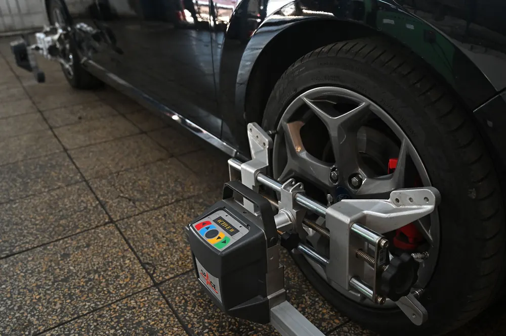
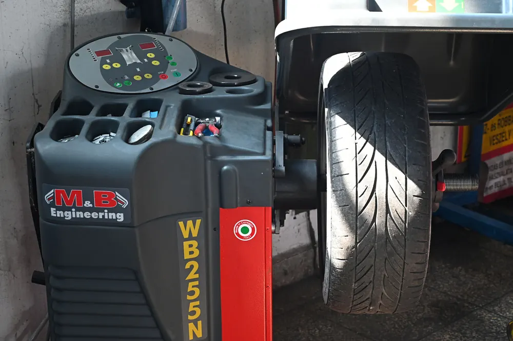
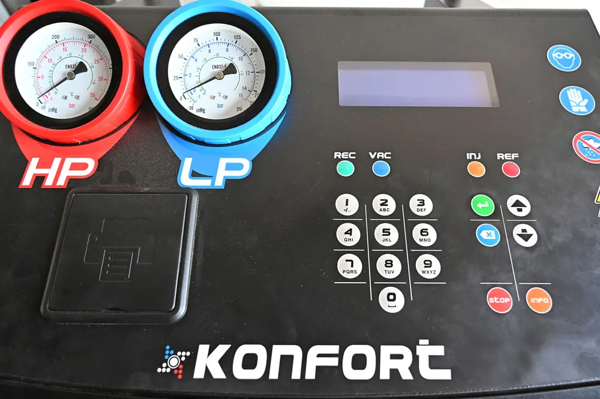
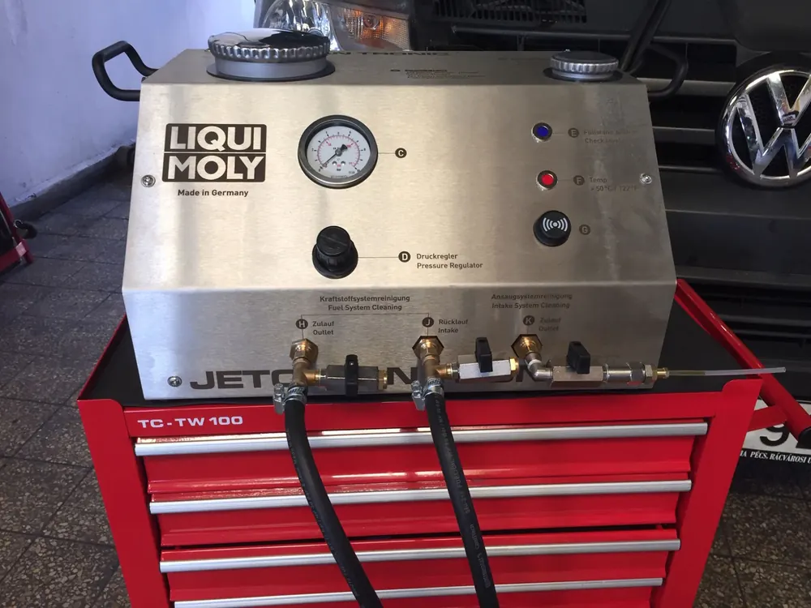
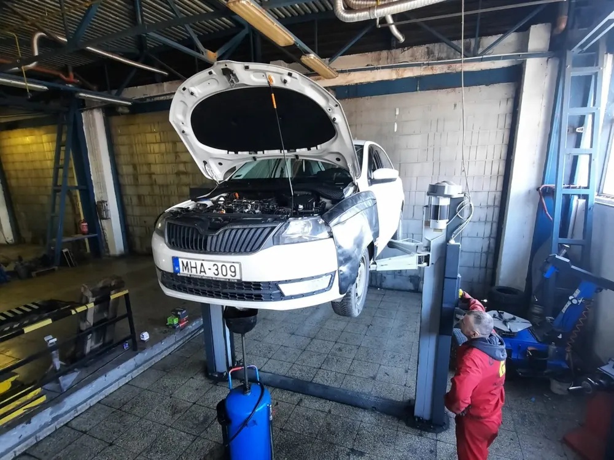
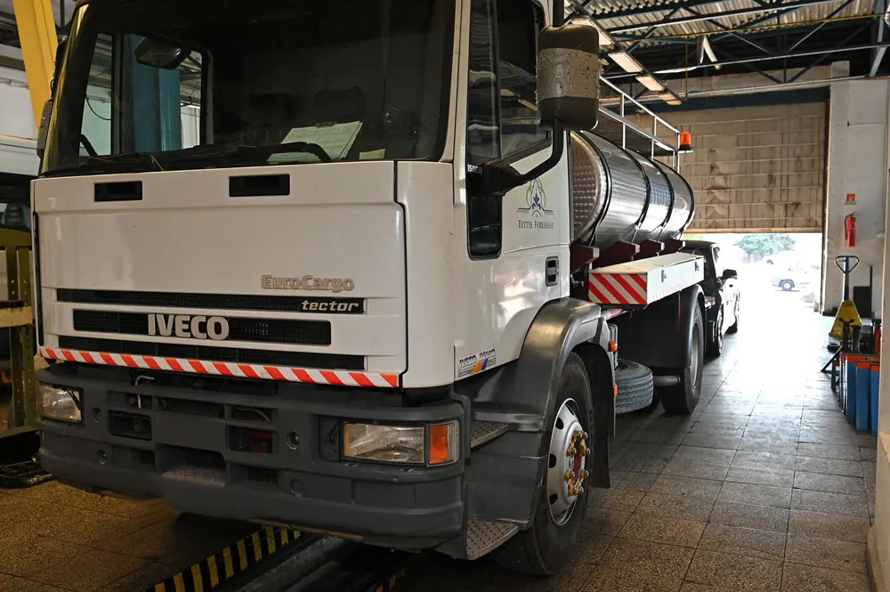

Javítás és komputeres diagnosztika
A diagnosztikai műszer a személyautótól a kamionig minden forgalomban lévő járművet kiolvas, így a valódi hibát javítjuk, nem a feltételezettet.

Családi vállalkozás 1993 óta · Pécs, Rácvárosi út 68.
Javítás, karbantartás, komputeres diagnosztika, futómű, klíma, gumi és műszaki vizsga egy helyen – magánszemélyeknek és cégeknek.
Milyen járművel jönne? Válasszon egyet:

Ezeket vállaljuk személyautóra. Ha nem tudja, mi a hiba, a diagnosztikával kezdjük.
Független műhelyként, ISO 9001 minőségbiztosítási rendszerben dolgozunk, saját műszerekkel.

A diagnosztikai műszer a személyautótól a kamionig minden forgalomban lévő járművet kiolvas, így a valódi hibát javítjuk, nem a feltételezettet.

Kátyú, kerékcsere vagy futóműjavítás után beállítjuk, hogy az autó egyenesen fusson, és a sérült futómű ne tegye tönkre a gumikat.

Minden gumiszerelés után kiegyensúlyozzuk a kereket, hogy nagy sebességnél se rázzon.

Személyautó, kisteherautó, teherautó és kisbusz klímájának töltése, javítása; vegyszer nélküli ózonos fertőtlenítés.
Ózonos fertőtlenítés: 6 000 Ft személyautó · nettó 8 000 Ft kisteher

Megbontás nélküli motorbeltér-tisztítás JetClean Tronic II-vel, benzines és dízel motorhoz; közvetlen befecskendezésesnél dióhéjas tisztítás.

Kiváló minőségű alapanyagokkal, hozzáértő szakemberekkel. Az elvégzett munkára garanciát vállalunk.

Állami vállalatoknak, Kft.-knek és magánszemélyeknek teljes körű karbantartást és javítást vállalunk. Az autópark teljes gondozását ránk bízhatja.
„Minden esetben a megbeszélt időpontra vállaljuk a szervizelést.”
Céges ügyfeleink közül visszajelzést adott többek között az SL Manufacturing Kft., a Termoplast Kft., a Mayer ker. Kft., a Bozóvill Kft. és a Germikó Bt.
Ahogy a nevünk is mutatja, A-tól Z-ig családi vállalkozásban dolgozunk. 1993-ban alapítottuk a céget, és azóta is a Rácvárosi úton javítjuk a személyautókat, kisteherautókat és teherautókat.
Független műhely vagyunk, ISO 9001 minőségbiztosítási rendszerben. A ritka megoldások egyike: a személy- és a tehergépjármű-szerviz nálunk egy helyen van, mert a műhelyben akna is van.
Alkatrész- és anyagpartnereink között van a Bosch, a Brembo, a Liqui Moly, a Michelin, a Monroe, a Sachs, a Textar, a Total és a Varta.
„Azonnal fogadták az autóm, és ma reggelre meg is oldódott a probléma. Gyors segítséget kaptam és nagyon korrektek voltak velem!”
„Nagyon kedvesek, mindig rövid időn belül számíthatunk rájuk!”
Egy dízel Peugeot lerobbant a pécsi hegyekben: a műhely autómentőt küldött, öt perc alatt megjavították, a beteg édesanyát pedig „rendkívül figyelmesen vendégül látták”.
Ha nem találja a választ, hívjon: 06 20 400 4455
Igen. Személy- és tehergépjármű szerviz vagyunk: a teherautót aknán, alulról vizsgáljuk, a diagnosztikai műszerünk pedig személyautótól a kamionig minden forgalomban lévő járművet kiolvas.
Hétfőtől péntekig 7:00 és 15:30 között. Szombaton és vasárnap zárva vagyunk.
Személyautónál 6 000 Ft, kisteherautónál nettó 8 000 Ft. Az ózongenerátor vegyszer nélkül fertőtleníti és szagtalanítja az utasteret, a klíma- és fűtőrendszert.
Soha. Csalók visszaéltek a nevünkkel, és előre utalást kértek nem létező munkákra. Ha ilyen üzenetet vagy hirdetést lát, ne utaljon pénzt, és értesítsen minket.
A négy évnél idősebb személyautóknak kétévente kell műszaki vizsgán részt venniük, a taxiknak, mentőautóknak, autóbuszoknak, teherautóknak és a 3500 kg össztömeget meghaladó járműveknek évente.
Igen. Autóflották teljes körű javítását és karbantartását, gumiszerelését, defektjavítását, műszaki vizsgára való felkészítését és vizsgáztatását vállaljuk, minden esetben a megbeszélt időpontra.
Igen, az elvégzett munkára garanciát vállalunk. Az olajcserét hozzáértő szakemberek végzik, kiváló minőségű alapanyagokkal.
Írja meg, milyen járművel jönne, és munkaidőben visszahívjuk, hogy megbeszéljük az időpontot.
Figyelem: csalók élnek vissza a nevünkkel.Cégünk soha nem kér előre utalást a szolgáltatásaiért. Ha gyanús üzenetet vagy hirdetést lát a nevünkkel, ne utaljon pénzt, és értesítsen minket.